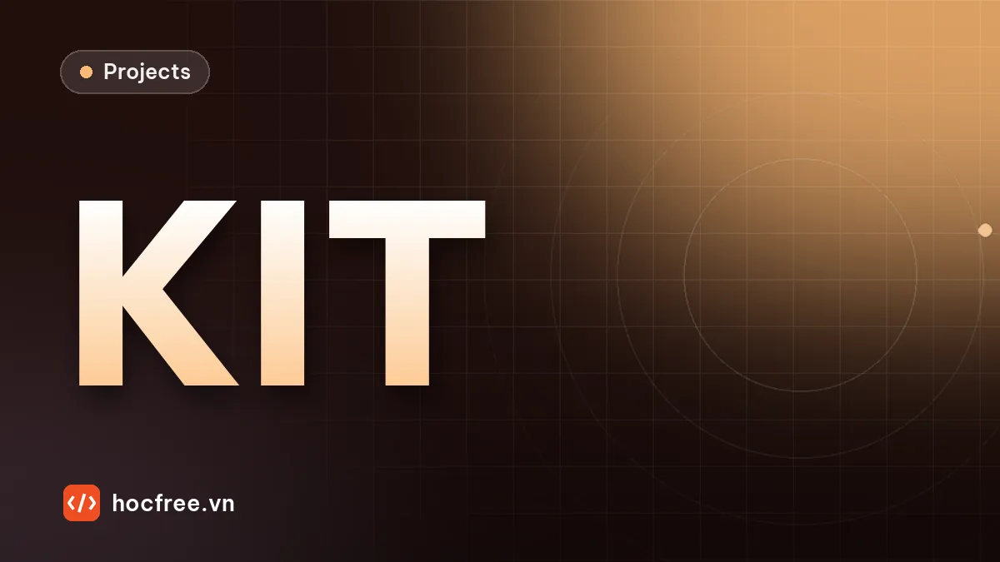

Dự án: lỗi logic khi đóng gói kit linh kiện – PatchCore hay đếm?
Khay kit đúng từng món nhưng sai tổ hợp: thiếu, thừa, sai loại, nhầm ngăn. So PatchCore với kiểm theo danh sách đóng gói trên 150 khay, và lỗi không ai lường trước.

Nội dung bài viết
Độ khó: ★★★☆ (khó) · Cần học trước: chặng 3: Image Processing, chặng 13: Detection / Segmentation / Anomaly Detection · Thời lượng: khoảng 2,5 giờ
Một khay bộ linh kiện (kit) gửi cho dây chuyền lắp ráp phải có đúng 4 ốc M4×20, 4 vòng đệm, 2 đai ốc, 1 lò xo, mỗi loại trong đúng ngăn của nó. Lỗi hay gặp nhất không phải món bị hỏng mà là tổ hợp sai: thiếu một con ốc, thừa một vòng đệm, lẫn một ốc ngắn, một đai ốc rơi sang ngăn bên cạnh. Từng món đều hoàn hảo, nên các phương pháp "học ngoại hình từ ảnh tốt" như PatchCore gần như không thấy gì. Bộ dữ liệu MVTec LOCO AD được xây dựng chính vì loại lỗi này, gọi là lỗi logic. Dự án này đo bằng số khoảng cách giữa hai cách tiếp cận và cách kết hợp chúng.
1. Bài toán
"Khách hàng lắp ráp phàn nàn: khay KIT-07 lúc thiếu ốc, lúc thừa vòng đệm, có lần lẫn ốc M4×12. Bộ phận AI thử một mô hình anomaly detection học từ ảnh khay tốt, đạt điểm rất cao trên ảnh vỡ, móp, nhưng vẫn để lọt khay thiếu ốc."
| Ngăn | Nội dung đúng |
|---|---|
| 1 (trên trái) | 4 ốc M4×20 |
| 2 (trên phải) | 4 vòng đệm M4 |
| 3 (dưới trái) | 2 đai ốc M4 |
| 4 (dưới phải) | 1 lò xo |
Lỗi cần bắt: thiếu món, thừa món, sai loại (ốc M4×12 lẫn vào), nhầm ngăn, và món bị hỏng (vòng đệm vỡ). Ảnh 3 pixel/mm, khay 213 × 160 mm, món đặt ngẫu nhiên vị trí và góc trong ngăn.
2. Yêu cầu
- Báo rõ lỗi theo ngăn và theo loại món (cho người đóng gói sửa ngay), không chỉ OK/NG.
- Món không nhận ra được loại thì báo "món lạ", không được bỏ qua.
- Đổi mã kit chỉ cần đổi danh sách, không cần học lại.
3. Kiến thức sử dụng
- Anomaly detection với PaDiM và PatchCore, dự án lỗi bề mặt bằng PatchCore.
- Đặc trưng contour và blob: diện tích, tỉ lệ cạnh, lỗ (hierarchy),
minAreaRect. - Rule-based hay Deep Learning.
4. Dữ liệu: khay mô phỏng
import cv2
import numpy as np
PX_MM = 3.0
H, W = 480, 640 # khay 213 × 160 mm, 4 ngăn 2 × 2
NGAN = [(0, 0, 320, 240), (320, 0, 640, 240), (0, 240, 320, 480), (320, 240, 640, 480)] # x0, y0, x1, y1
DANH_SACH = {0: {"ốc M4×20": 4}, 1: {"vòng đệm": 4}, 2: {"đai ốc": 2}, 3: {"lò xo": 1}} # danh sách đóng gói KIT-07
def ve_mon(anh, loai, cx, cy, goc, hong=False):
"""Vẽ một món (sáng, kim loại) lên ảnh. hong=True: vòng đệm bị vỡ một góc (lỗi cấu trúc)."""
p = lambda mm: mm * PX_MM
r = np.radians(goc)
u = np.array([np.cos(r), np.sin(r)])
if loai.startswith("ốc"):
dai = 20 if loai == "ốc M4×20" else 12
if hong: # ốc cong: thân gãy góc 30° ở giữa
u2 = np.array([np.cos(r + np.radians(30)), np.sin(r + np.radians(30))])
for huong, tam in ((u, (cx - u[0] * p(dai / 4), cy - u[1] * p(dai / 4))), (u2, (cx + u2[0] * p(dai / 4), cy + u2[1] * p(dai / 4)))):
g2 = np.degrees(np.arctan2(huong[1], huong[0]))
cv2.fillPoly(anh, [np.round(cv2.boxPoints((tam, (p(dai / 2), p(4)), g2))).astype(np.int32)], 0.70, cv2.LINE_AA)
else:
than = cv2.boxPoints(((cx, cy), (p(dai), p(4)), goc)) # (cx, cy) là tâm cả con ốc
cv2.fillPoly(anh, [np.round(than).astype(np.int32)], 0.70, cv2.LINE_AA)
dau = (int(cx - u[0] * p(dai / 2)), int(cy - u[1] * p(dai / 2)))
cv2.circle(anh, dau, int(p(3.5)), 0.80, -1, cv2.LINE_AA)
elif loai == "vòng đệm":
cv2.circle(anh, (int(cx), int(cy)), int(p(4.5)), 0.75, -1, cv2.LINE_AA)
cv2.circle(anh, (int(cx), int(cy)), int(p(2.15)), 0.15, -1, cv2.LINE_AA)
if hong:
cv2.ellipse(anh, (int(cx), int(cy)), (int(p(5)), int(p(5))), goc, 0, 70, 0.15, -1, cv2.LINE_AA)
elif loai == "đai ốc":
luc_giac = np.array([[cx + p(4) * np.cos(r + k * np.pi / 3), cy + p(4) * np.sin(r + k * np.pi / 3)] for k in range(6)])
cv2.fillPoly(anh, [np.round(luc_giac).astype(np.int32)], 0.72, cv2.LINE_AA)
cv2.circle(anh, (int(cx), int(cy)), int(p(1.7)), 0.15, -1, cv2.LINE_AA)
else: # lò xo: nhìn ngang, các vòng dây sáng tối xen kẽ
buoc_vong = 4.2 if hong else 3.0 # lò xo bị kéo giãn
for k in range(9):
tam = (cx + u[0] * p(-4 * buoc_vong + buoc_vong * k), cy + u[1] * p(-4 * buoc_vong + buoc_vong * k))
hop = cv2.boxPoints((tam, (p(1.6), p(8)), goc))
cv2.fillPoly(anh, [np.round(hop).astype(np.int32)], 0.78, cv2.LINE_AA)
def tao_bo(rng, ty_le_loi=0.5):
"""Nội dung thật của khay: list (ngăn, loại, hỏng). Lỗi: thiếu, thừa, sai loại, nhầm ngăn, vòng đệm vỡ."""
mon = [[n, loai, False] for n, ds in DANH_SACH.items() for loai, so in ds.items() for _ in range(so)]
loi = "OK"
if rng.random() < ty_le_loi:
loi = ["thiếu", "thừa", "sai loại", "nhầm ngăn", "vòng đệm vỡ"][rng.integers(0, 5)]
if loi == "thiếu":
mon.pop(int(rng.integers(0, len(mon))))
elif loi == "thừa":
m = mon[int(rng.integers(0, len(mon)))]
mon.append(list(m))
elif loi == "sai loại":
mon[int(rng.integers(0, 4))][1] = "ốc M4×12" # ốc ngắn lẫn vào
elif loi == "nhầm ngăn":
mon[8][0] = 1 # một đai ốc rơi sang ngăn vòng đệm
else:
mon[int(rng.integers(4, 8))][2] = True
return mon, loi
def chup_khay(mon, rng):
anh = np.full((H, W), 0.15, np.float32)
cv2.line(anh, (320, 0), (320, 480), 0.45, 6)
cv2.line(anh, (0, 240), (640, 240), 0.45, 6)
o_trong = {n: list(rng.permutation(6)) for n in range(4)} # mỗi ngăn có lưới 3 × 2 chỗ, xáo trộn
for ngan, loai, hong in mon:
x0, y0, _, _ = NGAN[ngan]
o = o_trong[ngan].pop()
cx = x0 + 58 + 102 * (o % 3) + rng.uniform(-6, 6)
cy = y0 + 62 + 116 * (o // 3) + rng.uniform(-6, 6)
ve_mon(anh, loai, cx, cy, rng.uniform(0, 360), hong)
return np.clip(anh + rng.normal(0, 0.02, anh.shape), 0, 1).astype(np.float32)
rng = np.random.default_rng(0)
mon, loi = tao_bo(rng, 0)
cv2.imwrite("khay.png", np.uint8(255 * chup_khay(mon, rng)))
print("KIT-07:", {n: ds for n, ds in DANH_SACH.items()}, "| tổng", len(mon), "món")KIT-07: {0: {'ốc M4×20': 4}, 1: {'vòng đệm': 4}, 2: {'đai ốc': 2}, 3: {'lò xo': 1}} | tổng 11 mónMỗi ngăn có lưới 3 × 2 vị trí được xáo trộn, mỗi món rung lệch vài pixel và xoay ngẫu nhiên. Ảnh mẫu lưu ở khay.png.
5. Cách 1: phát hiện bất thường kiểu PatchCore
Ý tưởng của PatchCore: gom đặc trưng của mọi patch nhỏ trên các ảnh tốt vào một bộ nhớ; một ảnh mới có điểm bất thường bằng khoảng cách lớn nhất từ một patch của nó tới patch gần nhất trong bộ nhớ. Bản thu nhỏ dưới đây dùng chính các giá trị pixel của patch 8 × 8 mm làm đặc trưng (PatchCore thật dùng đặc trưng mạng CNN), giảm còn 8 chiều bằng PCA để tìm láng giềng nhanh bằng cây KD. Ngưỡng lấy bằng 1,1 lần điểm lớn nhất trên 20 khay tốt kiểm định.
from sklearn.decomposition import PCA
from sklearn.neighbors import NearestNeighbors
def dac_trung_patch(anh, co=8, buoc=2):
"""Thu ảnh về 1 mm/pixel; mỗi patch 8 × 8 mm (bước 2 mm) là một vector 64 giá trị: ngoại hình cục bộ."""
nho = cv2.resize(anh, (W // 3, H // 3), interpolation=cv2.INTER_AREA)
p = np.lib.stride_tricks.sliding_window_view(nho, (co, co))[::buoc, ::buoc]
return p.reshape(-1, co * co)
rng_ad = np.random.default_rng(10)
bo_nho = np.concatenate([dac_trung_patch(chup_khay(tao_bo(rng_ad, 0)[0], rng_ad)) for _ in range(30)]) # 30 khay tốt
pca = PCA(8).fit(bo_nho[::10]) # giảm còn 8 chiều để tìm láng giềng nhanh
lang_gieng = NearestNeighbors(n_neighbors=1, algorithm="kd_tree").fit(pca.transform(bo_nho))
def diem_bat_thuong(anh):
"""Điểm của khay = khoảng cách lớn nhất từ một patch của khay tới patch gần nhất trong bộ nhớ khay tốt."""
return float(lang_gieng.kneighbors(pca.transform(dac_trung_patch(anh)))[0].max())
NGUONG_AD = 1.1 * max(diem_bat_thuong(chup_khay(tao_bo(rng_ad, 0)[0], rng_ad)) for _ in range(20))
print(f"bộ nhớ {len(bo_nho)} patch; ngưỡng (lớn nhất trên 20 khay tốt kiểm định × 1,1) = {NGUONG_AD:.3f}")bộ nhớ 237930 patch; ngưỡng (lớn nhất trên 20 khay tốt kiểm định × 1,1) = 0.843Bản đầu dùng bước patch 4 mm và giữ vector 64 chiều: khay tốt và khay có vòng đệm vỡ chồng điểm lên nhau, mà tìm láng giềng trên bộ nhớ lớn mất nhiều phút. Bước patch 2 mm (đủ để mọi vị trí lệch của món đều có patch giống trong bộ nhớ) cùng PCA 8 chiều mới tách được hai nhóm trong thời gian hợp lý.
6. Cách 2: kiểm theo danh sách đóng gói
Với từng ngăn: tách món khỏi nền, nối các vòng dây lò xo bằng closing, rồi phân loại từng blob theo hình dạng:
- Lò xo: trước khi nối gồm từ 5 mảnh rời trở lên.
- Ốc: dài hơn 1,8 lần bề rộng; dài hơn 19,5 mm là M4×20, ngắn hơn là M4×12.
- Vòng đệm, đai ốc: có lỗ (contour con trong hierarchy); diện tích lớn hơn 41 mm² là vòng đệm.
- Món lạ hoặc vỡ: không khớp loại nào.
Rồi so số món mỗi loại trong mỗi ngăn với danh sách.
def phan_loai_mon(anh, ngan):
"""Đếm món trong một ngăn theo loại, dựa trên hình dạng blob."""
x0, y0, x1, y1 = NGAN[ngan]
vung = anh[y0 + 6:y1 - 6, x0 + 6:x1 - 6]
sang = (vung > 0.4).astype(np.uint8)
lien = cv2.morphologyEx(sang, cv2.MORPH_CLOSE, np.ones((5, 5), np.uint8)) # nối các vòng dây lò xo
n, nhan, st, _ = cv2.connectedComponentsWithStats(lien)
dem = {}
for k in range(1, n):
if st[k, cv2.CC_STAT_AREA] < 40:
continue
m = (nhan == k).astype(np.uint8)
bien, cap = cv2.findContours(m, cv2.RETR_CCOMP, cv2.CHAIN_APPROX_SIMPLE)
co_lo = any(h[3] >= 0 for h in cap[0]) # có contour con: có lỗ
(_, _), (a, b), _ = cv2.minAreaRect(np.column_stack(np.nonzero(m))[:, ::-1].astype(np.float32))
dai_mm, rong_mm = max(a, b) / PX_MM, min(a, b) / PX_MM
dt_mm2 = st[k, cv2.CC_STAT_AREA] / PX_MM ** 2
so_manh = cv2.connectedComponents(sang * m)[0] - 1 # trước khi nối: mấy mảnh rời
if so_manh >= 5:
loai = "lò xo"
elif dai_mm > 1.8 * rong_mm:
loai = "ốc M4×20" if dai_mm > 19.5 else "ốc M4×12"
elif co_lo:
loai = "vòng đệm" if dt_mm2 > 41 else "đai ốc"
else:
loai = "món lạ / vỡ"
dem[loai] = dem.get(loai, 0) + 1
return dem
def kiem_danh_sach(anh):
"""So số món từng loại trong từng ngăn với danh sách đóng gói; trả về danh sách sai lệch."""
sai = []
for ngan in range(4):
thay = phan_loai_mon(anh, ngan)
can = DANH_SACH[ngan]
for loai in set(thay) | set(can):
if thay.get(loai, 0) != can.get(loai, 0):
sai.append(f"ngăn {ngan + 1}: {loai} {thay.get(loai, 0)}/{can.get(loai, 0)}")
return sairng_vd = np.random.default_rng(3)
for _ in range(6):
mon, loi = tao_bo(rng_vd, 1.0)
a = chup_khay(mon, rng_vd)
print(f"{loi:12s} | PatchCore: {'NG' if diem_bat_thuong(a) > NGUONG_AD else 'OK'} ({diem_bat_thuong(a):.3f}) | danh sách: {kiem_danh_sach(a) or 'OK'}")thiếu | PatchCore: OK (0.508) | danh sách: ['ngăn 1: ốc M4×20 3/4']
sai loại | PatchCore: OK (0.549) | danh sách: ['ngăn 1: ốc M4×20 3/4', 'ngăn 1: ốc M4×12 1/0']
sai loại | PatchCore: OK (0.490) | danh sách: ['ngăn 1: ốc M4×20 3/4', 'ngăn 1: ốc M4×12 1/0']
sai loại | PatchCore: OK (0.655) | danh sách: ['ngăn 1: ốc M4×20 3/4', 'ngăn 1: ốc M4×12 1/0']
nhầm ngăn | PatchCore: OK (0.417) | danh sách: ['ngăn 2: đai ốc 1/0', 'ngăn 3: đai ốc 1/2']
vòng đệm vỡ | PatchCore: NG (1.147) | danh sách: ['ngăn 2: món lạ / vỡ 1/0', 'ngăn 2: vòng đệm 3/4']Khay "nhầm ngăn" là ví dụ rõ nhất: đai ốc trong ngăn vòng đệm trông hoàn toàn bình thường với PatchCore (bộ nhớ có rất nhiều patch đai ốc, từ ngăn 3), nhưng danh sách thấy ngay "ngăn 2 có 1 đai ốc, cần 0" và "ngăn 3 chỉ có 1/2". Kết quả của danh sách còn nói chính xác phải sửa gì.
7. So sánh trên 150 khay
from collections import Counter
rng_dg = np.random.default_rng(4)
bat = {"PatchCore": Counter(), "danh sách đóng gói": Counter(), "kết hợp cả hai": Counter()}
tong = Counter()
for _ in range(150):
mon, loi = tao_bo(rng_dg)
anh = chup_khay(mon, rng_dg)
ad = diem_bat_thuong(anh) > NGUONG_AD
ds = bool(kiem_danh_sach(anh))
tong[loi] += 1
for ten, ng in (("PatchCore", ad), ("danh sách đóng gói", ds), ("kết hợp cả hai", ad or ds)):
bat[ten][loi] += ng
loai = ["thiếu", "thừa", "sai loại", "nhầm ngăn", "vòng đệm vỡ"]
print(f"{'cách kiểm':20s} | khay tốt bị loại | " + " | ".join(loai))
for ten, c in bat.items():
print(f"{ten:20s} | {c['OK']:>7d}/{tong['OK']:<8d} | " + " | ".join(f"{c[l]}/{tong[l]}" for l in loai))cách kiểm | khay tốt bị loại | thiếu | thừa | sai loại | nhầm ngăn | vòng đệm vỡ
PatchCore | 2/78 | 0/16 | 1/11 | 0/14 | 1/20 | 11/11
danh sách đóng gói | 0/78 | 16/16 | 11/11 | 14/14 | 20/20 | 11/11
kết hợp cả hai | 2/78 | 16/16 | 11/11 | 14/14 | 20/20 | 11/11PatchCore bắt đủ vòng đệm vỡ, đúng loại lỗi nó được thiết kế để bắt: ngoại hình cục bộ chưa từng thấy. Nó gần như mù với bốn loại lỗi logic, vì không patch nào trên khay thiếu ốc hay khay nhầm ngăn là lạ. Danh sách đóng gói bắt đủ cả năm loại trên bộ thử, và kết hợp hai cách (NG nếu một trong hai báo NG) không làm mất gì ngoài vài khay tốt bị PatchCore loại nhầm. Vậy PatchCore để làm gì? Danh sách bắt được vòng đệm vỡ chỉ vì có người đã lường trước và viết quy tắc "vòng đệm phải có lỗ". Bài tập 1 cho thấy chuyện gì xảy ra với lỗi không ai lường trước.
8. Bẫy thực tế
| Bẫy | Hậu quả | Cách tránh |
|---|---|---|
| Chỉ dùng anomaly detection cho bài toán đếm, xếp đúng chỗ | Lọt gần hết lỗi logic | Kiểm theo danh sách hoặc detection + đếm; anomaly detection bổ sung cho lỗi cấu trúc |
| Món chồng lên nhau, chạm nhau | Đếm sai | Khay có ngăn đủ rộng; tách blob khi chắc chắn, không thì báo kiểm tay |
| Hai loại món gần giống (M4×20 và M4×16) | Ngưỡng chiều dài sát nhau, nhạy với độ phân giải | Tăng độ phân giải hoặc đo chiều dài dưới pixel; dạy ngưỡng từ mẫu thật của cả hai loại |
| Bỏ qua blob không nhận ra | Món lạ lọt vào kit | Mọi blob phải được xếp loại, không xếp được là NG "món lạ" |
| Đổi mã kit | Mô hình anomaly cũ coi kit mới là bất thường hoặc ngược lại không thấy khác biệt | Danh sách theo mã kit đọc từ MES; học lại bộ nhớ ảnh tốt cho mã mới |
9. Tự đánh giá
- 150 khay: kết hợp hai cách bắt đủ năm loại lỗi; số khay tốt bị loại nhầm được đo và giải thích.
- Báo cáo lỗi theo ngăn, theo loại món.
- Hiểu và chứng minh bằng số giới hạn của anomaly detection với lỗi logic, và giới hạn của quy tắc với lỗi không lường trước.
Bài tập
Bài 1. Lỗi không ai lường trước
Hai lỗi mới xuất hiện: ốc bị cong thân (gãy góc 30°) và lò xo bị kéo giãn. Mỗi cách bắt được bao nhiêu? Nếu cả hai cùng lọt, sửa thế nào?
Xem đáp án
# Lỗi chưa từng lường trước: ốc bị cong, lò xo bị kéo giãn. Danh sách đóng gói vẫn đếm đủ, đúng loại.
rng_e1 = np.random.default_rng(30)
for ten, chi_so in (("ốc cong", 0), ("lò xo giãn", 10)):
ad = ds = 0
for _ in range(12):
mon, _ = tao_bo(rng_e1, 0)
mon[chi_so][2] = True
anh = chup_khay(mon, rng_e1)
ad += diem_bat_thuong(anh) > NGUONG_AD
ds += bool(kiem_danh_sach(anh))
print(f"{ten:11s}: PatchCore bắt {ad}/12, danh sách đóng gói bắt {ds}/12")ốc cong : PatchCore bắt 0/12, danh sách đóng gói bắt 0/12
lò xo giãn : PatchCore bắt 6/12, danh sách đóng gói bắt 12/12Kết quả trái với kỳ vọng "PatchCore bắt lỗi lạ". Ốc cong lọt cả hai cách: mỗi nửa thân ốc cong vẫn giống hệt một đoạn thân ốc thẳng xoay một góc khác, nên mọi patch đều quen thuộc; còn danh sách vẫn đếm được 4 con ốc dài. Lỗi nằm ở hình dạng toàn cục, không ở ngoại hình cục bộ. Lò xo giãn thì PatchCore bắt được một nửa (khoảng cách vòng dây lạ thật, nhưng không lạ ở mọi patch), còn danh sách "bắt" được hết nhưng là nhờ may: các vòng dây cách xa nhau không nối được nên bị xếp thành món lạ. Cách sửa cho ốc cong là thêm một phép đo đúng bản chất lỗi: độ thẳng của thân.
def do_cong_than_oc(m):
"""m: mặt nạ một con ốc. Bỏ đầu ốc (phần còn lại sau khi co 15 pixel), fit đường thẳng cho thân,
trả về khoảng cách lớn nhất (mm) từ pixel thân tới đường thẳng đó. Thân thẳng rộng 4 mm thì khoảng 2 mm."""
dau = cv2.dilate(cv2.erode(m, cv2.getStructuringElement(cv2.MORPH_ELLIPSE, (15, 15))),
cv2.getStructuringElement(cv2.MORPH_ELLIPSE, (31, 31)))
than = np.column_stack(np.nonzero(m & (1 - dau)))[:, ::-1].astype(np.float32)
vx, vy, x0, y0 = cv2.fitLine(than, cv2.DIST_L2, 0, 0.01, 0.01).ravel()
return float(np.abs((than[:, 0] - x0) * vy - (than[:, 1] - y0) * vx).max()) / PX_MM
def kiem_oc_cong(anh):
x0, y0, x1, y1 = NGAN[0]
vung = anh[y0 + 6:y1 - 6, x0 + 6:x1 - 6]
n, nhan, st, _ = cv2.connectedComponentsWithStats((vung > 0.4).astype(np.uint8))
return [round(do_cong_than_oc((nhan == k).astype(np.uint8)), 2) for k in range(1, n) if st[k, cv2.CC_STAT_AREA] >= 40]
rng_e1b = np.random.default_rng(31)
thang, cong = [], []
for _ in range(20):
mon, _ = tao_bo(rng_e1b, 0)
thang += kiem_oc_cong(chup_khay(mon, rng_e1b))
mon[0][2] = True
cong.append(max(kiem_oc_cong(chup_khay(mon, rng_e1b))))
print(f"độ cong thân ốc thẳng ({len(thang)} con): lớn nhất {max(thang):.2f} mm; ốc cong (20 con): nhỏ nhất {min(cong):.2f} mm")độ cong thân ốc thẳng (80 con): lớn nhất 2.26 mm; ốc cong (20 con): nhỏ nhất 2.77 mmBỏ đầu ốc (phần còn lại sau khi co mặt nạ 15 pixel), fit đường thẳng cho thân, lấy khoảng cách lớn nhất từ pixel thân tới đường đó. Thân thẳng rộng 4 mm cho khoảng 2 mm; thân cong cho lớn hơn rõ rệt, ngưỡng 2,5 mm tách được hai nhóm. Bài học: không có phương pháp nào bắt được mọi lỗi. Mỗi lần một loại lỗi mới lọt, thêm nó vào bộ ảnh vàng và thêm một phép đo có ý nghĩa vật lý, rồi đo lại toàn bộ để chắc không làm hỏng phần cũ.
Bài 2. Đổi sang kit mới
Dây chuyền chuyển sang KIT-08: 6 ốc M4×20, 2 vòng đệm, 2 đai ốc, không có lò xo. Mỗi cách cần làm gì? Nếu quên đổi, mỗi cách sẽ phản ứng thế nào với khay KIT-08 đúng?
Xem đáp án
Danh sách: chỉ cần đổi từ điển DANH_SACH, tốt nhất là đọc theo mã kit từ MES; quên đổi thì mọi khay KIT-08 bị NG với thông báo rất rõ ("ngăn 1: ốc M4×20 6/4", "ngăn 4: lò xo 0/1"), nên lỗi cấu hình được phát hiện ngay ở khay đầu tiên. PatchCore: phải chụp và học lại bộ nhớ từ vài chục khay KIT-08 tốt; quên học lại thì nguy hiểm hơn: khay KIT-08 không có patch nào lạ (vẫn là ốc, vòng đệm, đai ốc, nền khay), nên mô hình vẫn báo OK, kể cả khi người đóng gói xếp theo kit cũ. Một mô hình "không thấy khác biệt" khi đổi sản phẩm là dấu hiệu nó không kiểm tra điều bạn tưởng nó kiểm tra.
Nguồn tham khảo: P. Bergmann et al., "Beyond Dents and Scratches: Logical Constraints in Unsupervised Anomaly Detection and Localization", International Journal of Computer Vision 130, 2022 (bộ dữ liệu MVTec LOCO AD); K. Roth et al., "Towards Total Recall in Industrial Anomaly Detection" (PatchCore), CVPR 2022; scikit-learn: Nearest Neighbors (KD tree); OpenCV: Contours Hierarchy.